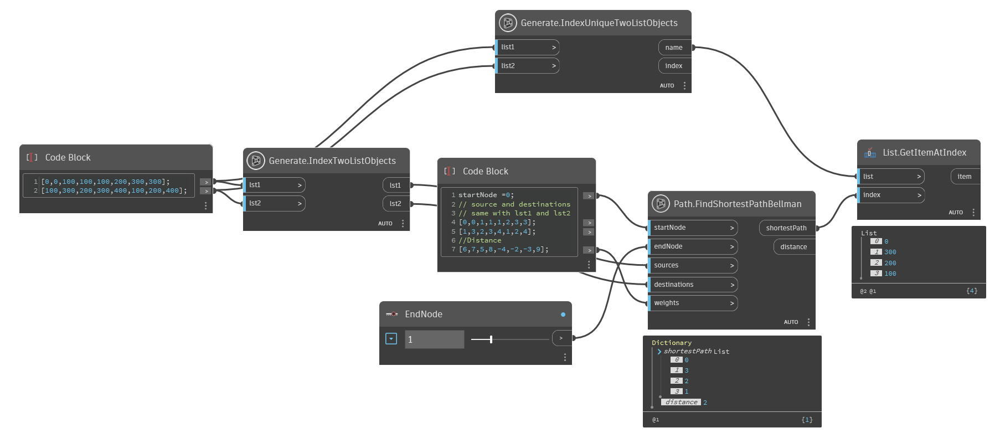
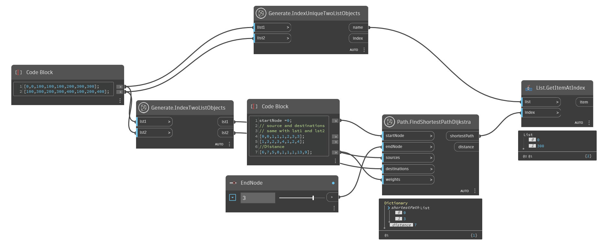
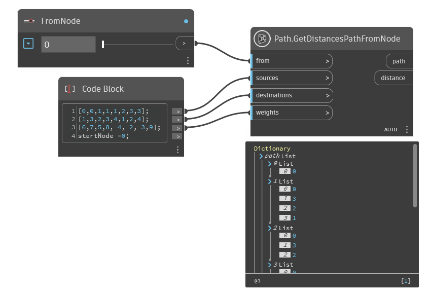

Class Path
- Namespace
- OpenMEPSandbox.Graph
- Assembly
- OpenMEPSandbox.dll
public class Path- Inheritance
-
Path
- Inherited Members
Methods
FindShortestPathBellman(int, int, List<int>, List<int>, List<int>)
Get shortest path and distance from start node to end node By Bellman-Ford algorithm
[MultiReturn(new string[] { "shortestPath", "distance" })]
public static Dictionary<string, object> FindShortestPathBellman(int startNode, int endNode, List<int> sources, List<int> destinations, List<int> weights)Parameters
startNodeintfirst location of node
endNodeintend location of node
sourcesList<int>A list of source vertices for each edge.
destinationsList<int>A list of destinations vertices for each edge.
weightsList<int>A list of weights for each edge.
Returns
- Dictionary<string, object>
the shortest path
Examples

Path.FindShortestPathBellman.dynExceptions
FindShortestPathDijkstra(int, int, List<int>, List<int>, List<int>)
Finds the shortest path between two nodes in a graph using Dijkstra's algorithm. The graph is represented as a list of edges, where each edge is a triple (source, destination, weight). The startNode and endNode parameters specify the source and destination nodes, respectively. The sources, destinations, and weights parameters contain the lists of source nodes, destination nodes, and edge weights, respectively, that make up the graph. Returns an array of node IDs that form the shortest path from the start node to the end node. If no path exists, returns an empty array.
[MultiReturn(new string[] { "shortestPath", "distance" })]
public static Dictionary<string, object> FindShortestPathDijkstra(int startNode, int endNode, List<int> sources, List<int> destinations, List<int> weights)Parameters
startNodeintThe ID of the start node.
endNodeintThe ID of the end node.
sourcesList<int>The list of source nodes for each edge in the graph.
destinationsList<int>The list of destination nodes for each edge in the graph.
weightsList<int>The list of edge weights for each edge in the graph.
Returns
- Dictionary<string, object>
the shortest path
Examples

Path.FindShortestPathDijkstra.dynGetDistancesPathFromNode(int, List<int>, List<int>, List<int>)
Finds the shortest path from each source vertex to every other vertex in the graph using the Bellman-Ford algorithm,
and returns an array of tuples containing the distance and path to each vertex.
The v and e parameters specify the number of vertices and edges in the graph, respectively.
The sources, targets, and weights lists define the source, destination, and weight of each edge, respectively.
[MultiReturn(new string[] { "path", "distance" })]
public static Dictionary<string, object> GetDistancesPathFromNode(int from, List<int> sources, List<int> destinations, List<int> weights)Parameters
fromintvalue of node want start check
sourcesList<int>A list of source vertices for each edge.
destinationsList<int>A list of target vertices for each edge.
weightsList<int>A list of weights for each edge.
Returns
- Dictionary<string, object>
An array of tuples, where each tuple contains the distance and path from a source vertex to every other vertex in the graph. If there is no path from a source to a destination vertex, or if there is a negative weight cycle in the graph, the distance for that tuple will be
double.MaxValueand the path will be an empty array.
Examples

Path.GetDistancesPathFromNode.dyn